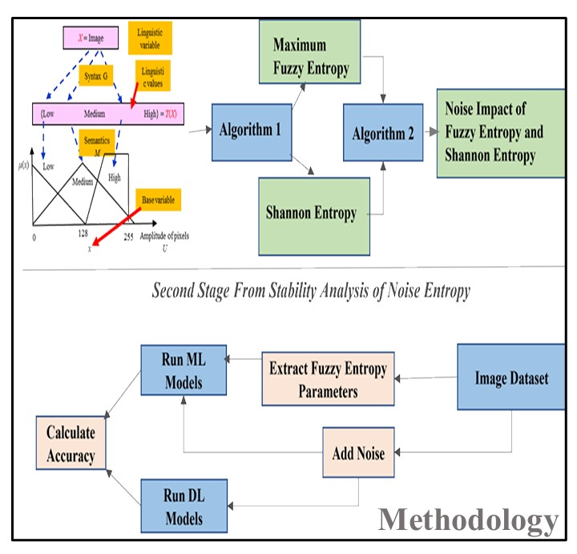
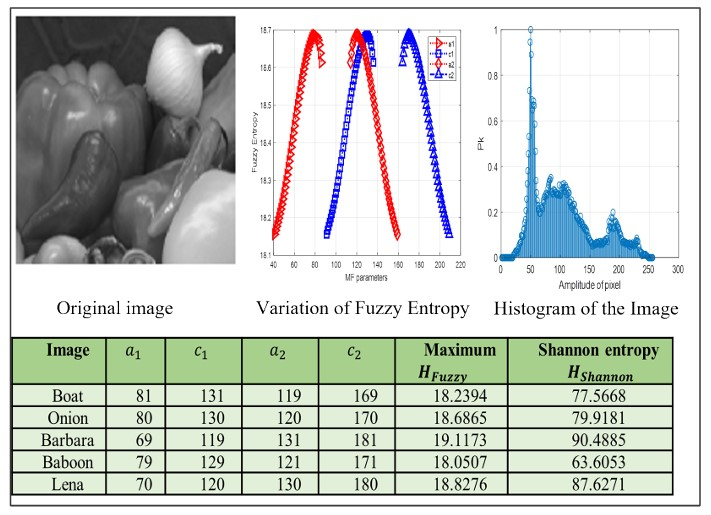
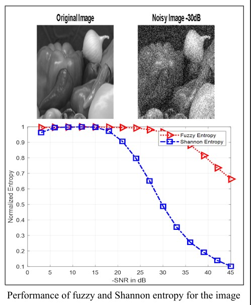
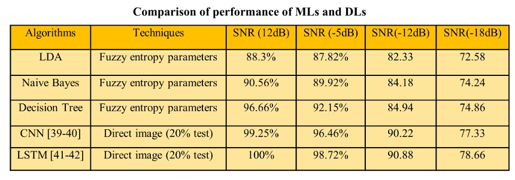
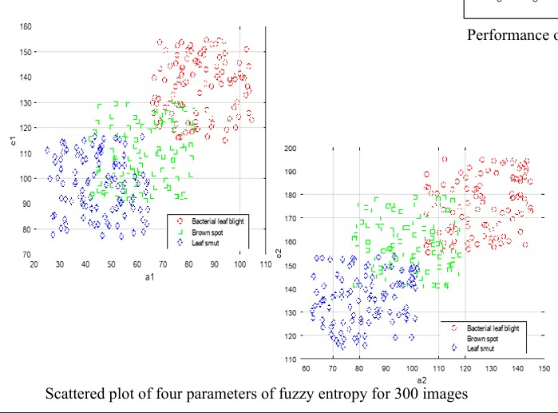
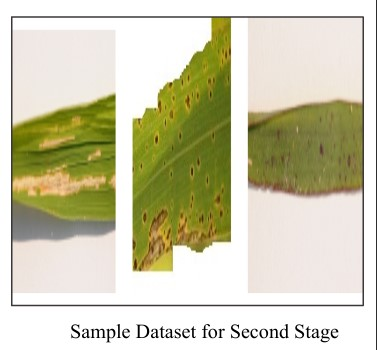
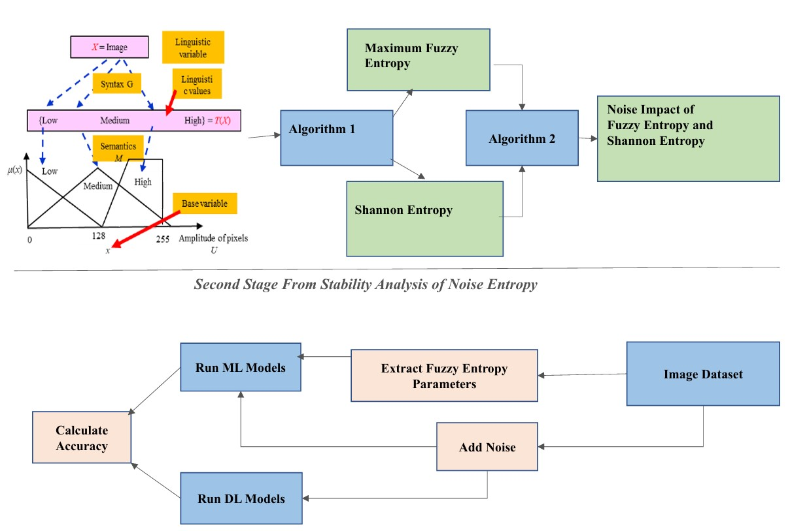

Considering the ubiquity of digital images and their noise issues during acquisition, this study aims to explores the concepts of Fuzzy entropy and Shannon entropy as potential features to enhance image recognition in noisy conditions.
To obtain this goal: A formulated algorithm is used to determine fuzzy entropy, its maximum value varying six parameters for all the input images. Shannon entropy is calculated from grayscale image directly. Then the impact of Additive White Gaussian Noise (AWGN) on obtained maximum fuzzy and Shannon entropy is observed varying SNR using another algorithm. Second stage of this research involves in combining the most stable feature acquired from the analysis with MLs to classify image sets and comparing their performance with CNN and LSTM under noisy environment.
From the analysis, fuzzy entropy is found more stable against SNR. Again, fuzzy entropy parameters combined with MLs classifiers show better stability of accuracy with variation of SNR compared to CNN and LSTM where images were applied directly.

This study, proves the effectiveness of fuzzy entropy as a feature. Future of this work includes: combine the ‘fuzzy entropy vector’ with other features like SURF, SIFT, HOG, DWT parameters etc., to observe any improvement of image recognition, matching, and reconstruction within short process time compared to deep learning NN. Again, several MLs under the ‘feature vector of fuzzy entropy’ will be combined to improve the accuracy of detection and the same technique will also be used on other two multimedia data: audio and video.
